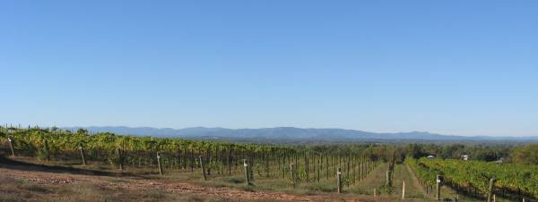

|
North America >
USA >
North Carolina >
Yadkin Valley >
Swan Creek >
Raffaldini

Raffaldini
Ronda, NC
|
The Italian family of Raffaldini established their New World vineyards in the Swan Creek area of the Yadkin Valley. They grow a
variety of Italian and French grapes for vinification and were instrumental in the creation of the
Swan Creek AVA in 2008. Raffaldini has been a leader in exploring the possiblity of the
Valley's terroir and improving the quality of the wines made there. No doubt they will provide us with pleasant surprises for years
to come.
|
www.raffaldini.com
Vintages:
Fiori Yadkin Valley White Table Wine
2005
2008
Pinot Grigio Swan Creek
2008
Vermentino Swan Creek
2008
Vermentino Yadkin Valley
2006
Chiara Yadkin Valley
2006
Chiara Rosé Table Wine
NV
Bello Misto Yadkin Valley Red Table Wine
2005
2006
2008
Oenotira Yadkin Valley Red Table Wine
2008
Pino Vino Yadkin Valley Red Table Wine
NV
Sangiovese Swan Creek
2008
Sangiovese Yadkin Valley
2005
Sangiovese Riserva Yadkin Valley
2005
|
|